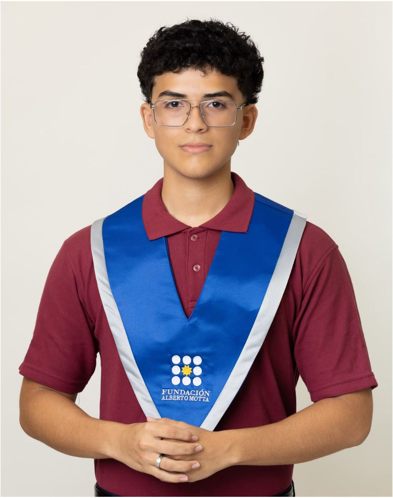
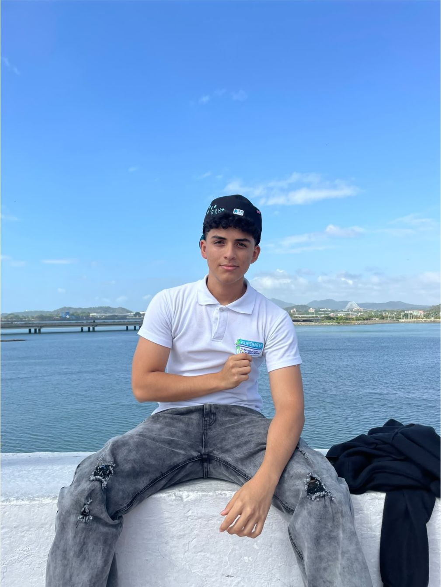
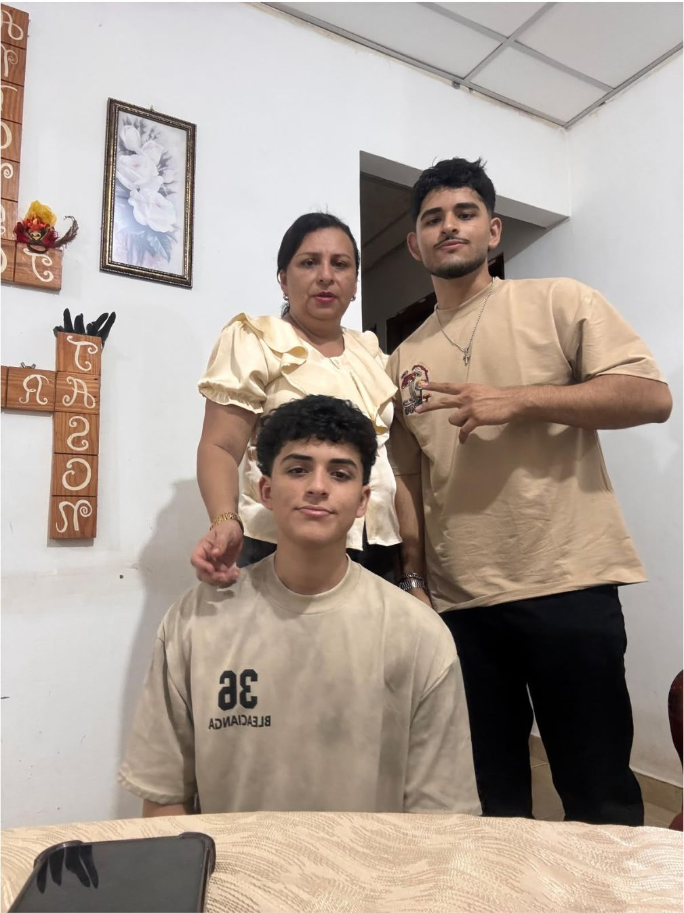

Joel C.
Soy emprendedor.
Construyo ideas, armo equipos y me rodeo de gente que vale oro.



Nada de esto lo hice solo.
Soy Joel. Emprendo, lidero equipos y creo que el trabajo rinde más cuando el ambiente es bueno. Prefiero una reunión con risas que una con caras largas, y casi siempre las mejores ideas salen cuando nadie se está tomando demasiado en serio.
Con el tiempo entendí que lo que de verdad se construye en cada proyecto no es solo un negocio: es una red de personas. Socios, mentores, clientes que se volvieron amigos y gente que me dio una mano cuando yo no tenía nada que ofrecer a cambio.
Esta página es mi forma de agradecerles. Y también una invitación: si buscas a alguien que tome decisiones, mueva al equipo y no pierda el humor en el camino, aquí me tienes.
Mi camino
Cuatro etapas que me enseñaron más que cualquier libro.
-
La idea
Todo empezó con una idea y más ganas que recursos. Aprendí que empezar imperfecto es mejor que esperar el momento ideal.
-
El primer equipo
Descubrí que liderar es escuchar. Las mejores decisiones llegaron cuando le di espacio a la gente que hacía el trabajo.
-
Los tropiezos
Hubo errores, cambios de rumbo y noches largas. También hubo amigos que se quedaron a ayudar sin que nadie se lo pidiera.
-
Hoy
Sigo construyendo, con más experiencia, la misma energía y una red de personas que ya siento como familia.
Lo que he construido
Tres etapas, tres proyectos. Toca uno para abrirlo.
Mi primer negocioInicio
Donde todo empezó: una idea sencilla que aprendí a convertir en negocio, con errores, clientes reales y mucho aprendizaje. Aquí entendí lo que significa responder por un equipo.
El equipoCrecimiento
Un proyecto hecho junto a socios y amigos, donde aprendí a delegar, medir resultados y celebrar cada avance, por pequeño que fuera.
Lo que vieneHoy
Mi proyecto actual: más grande, más claro y construido sobre todo lo aprendido, junto a las personas que me han acompañado desde el principio.
Mi gente, en un pedacito de mi corazón
Cada foto de este corazón es una persona o un momento que me marcó en el camino. Toca las piezas del centro para conocer más.
Mi historia en video
Dale play y conoce un poco más del camino.
Momentos
Reuniones, viajes, equipos y risas. Toca una foto para verla grande.
Hablemos
Si tienes una idea, un proyecto o solo quieres saludar, escríbeme. Siempre respondo, y casi siempre con buen humor.
joel@ejemplo.com